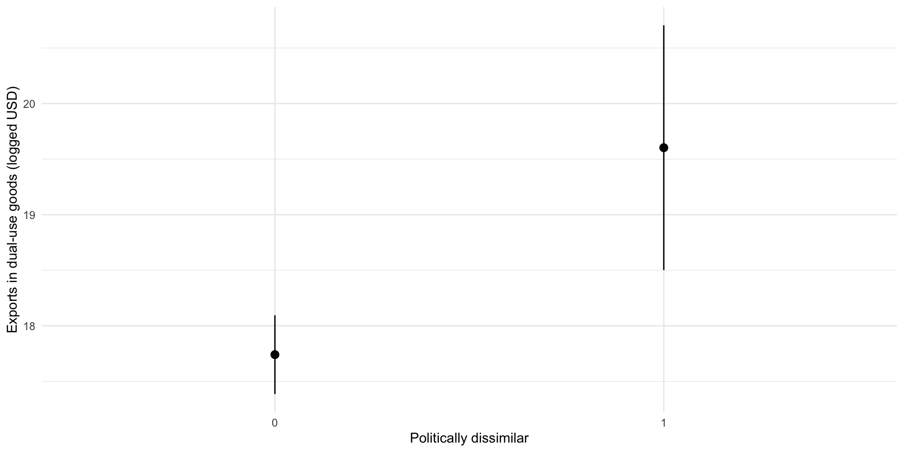

install.packages("car")Interactions
Warning
THIS IS A DRAFT.
Set up
You will need to install a new package to follow along:
You then need to load all relevant packages into your R session:
library(tidyverse)
library(polisciols)
library(modelsummary)
library(marginaleffects)
library(broom)
library(car)Exporting mass destruction
Trade between states is not only the product of economic considerations. States often promote or restrict trade with other states for political and security reasons. International political economists have identified a wide range of political factors that shape international trade, including regime type (democracies tend to trade more with each other than with other regimes), instability (states tend to trade less with states they believe to be at a high risk of conflict), and alliances (trade tends to “follow the flag”).
These theories of the political determinants of trade flows are often agnostic to the good being traded. But this is not necessarily the case. It is reasonable to expect that a state will be more mindful of who it supplies javelin missiles to than to whom it sells typewriters. Fuhrmann (2008) explores this distinction explicitly in his paper Exporting Mass Destruction? The Determinants of Dual-Use Trade.
He seeks to identify the strategic determinants of trade in dual-use commodities. These are commodities that can be used to produce Weapons of Mass Destruction (WMDs) or in legitimate civilian applications. Unlike javelin missiles, the purpose to which importing states will put these commodities is not clear. How do exporters balance the benefits of trade against the risk that they may enable WMD manufacturing?
To explore this question, Fuhrmann analyzes exports of dual-use commodities from the US to all other countries in the post-Cold War period between 1991 and 2001. Whilst he explores both economic and political determinants, his focus is on whether or not the US and its trade partner share the same foreign policy goals.
Before we dive into his full model, let’s set up our expectations. We should expect that states will be more reticent to sell these sensitive commodities to their enemies. Who knows to what nefarious purpose they may put them to?
Fuhrmann uses the degree to which states share similar foreign policy platforms to identify friends and enemies. This variable, pol_dissimiliarity is binary and takes on a value of 1 if the country enacts foreign policies that are very dissimilar to those of the US. In other words, pol_dissimilarity = 1 when they are enemies.
Note
For those who are interested, he asks whether the average compatibility between the country’s and the United States’ foreign policy between 1991 and 2001 was in the lowest 10th percentile of all countries’ similarities with the United States.
So, we should expect that the US traded less in these sensitive commodities with its enemies than with its friends. Let’s take a look:
x_mass_destruction |>
group_by(pol_dissimilarity) |>
summarise(avg_x_dual_use = scales::dollar(mean(x_dual_use)))# A tibble: 2 × 2
pol_dissimilarity avg_x_dual_use
<dbl> <chr>
1 0 $1,046,814,259
2 1 $1,710,910,642Hmm, the US appears to have provided its enemies with more dual-use commodities than its friends! That’s not very strategic!
But wait, let’s not write off US foreign policy just yet. Dual-use commodities are sensitive because they can be used to produce or support WMDs. But not all countries that import these commodities pursue WMDs. Many need these commodities for civilian applications.
So, it may in fact be the case that the US is only reticent to sell dual-use commodities to enemies that it knows are pursuing or have access to WMDs. Let’s include this characteristic in our summary:
x_mass_destruction |>
group_by(pol_dissimilarity, wmd_pursuit) |>
summarise(avg_x_dual_use = scales::dollar(mean(x_dual_use))) # A tibble: 4 × 3
# Groups: pol_dissimilarity [2]
pol_dissimilarity wmd_pursuit avg_x_dual_use
<dbl> <dbl> <chr>
1 0 0 $924,468,836
2 0 1 $3,004,341,034
3 1 0 $1,811,301,875
4 1 1 $104,650,927 Ah! There we go! The US is happy to trade in dual-use commodities with enemies when they are not pursuing WMDs. Further, the US is happy to trade in dual-use commodities with its friends that are pursuing WMDs. I guess their interests must be really aligned.
This simple summary suggests that the relationship between trade in dual-use commodities and foreign policy is not as straight forward as we first thought. The US appears to be less willing to trade in these sensitive commodities with enemies if they are pursuing WMDs. This condition is critical to understanding this relationship.
In other words, we cannot say anything about the relationship between trade in dual-use commodities and foreign policy without first knowing whether the country in question is pursuing WMDs. If someone were to ask you “do you think the US avoids exporting dual-use commodities to its enemies?”, you should reply “it depends!”.
We can explore this more complex relationship formally using interactions. Below, we will replicate Fuhrmann’s analysis. In doing do, we will strengthen our understanding of multiple linear regression and introduce the knowledge required to interpret interaction effects.
Let’s get started!
Dual-use trade
Fuhrmann draws on existing literature to build an understanding of the determinants of trade in dual-use commodities. Let’s build his baseline model of US exports of dual-use commodities:
m <- lm(log(x_dual_use) ~ defence_ally + democracy + conflict + pol_dissimilarity +
wmd_pursuit + wmd_acquisition + log_gdp + log_population +
log_distance + log_x_all,
data = x_mass_destruction)
modelsummary(m,
stars = T,
coef_rename = c(
"log_gdp" = "Average GDP (USD logged)",
"log_population" = "Average population (logged)",
"log_distance" = "Distance between the United States and the country (logged)",
"log_x_all" = "Total imports from the US (USD logged)"))| (1) | |
|---|---|
| (Intercept) | −3.085 |
| (3.173) | |
| defence_ally | 0.244 |
| (0.545) | |
| democracy | 0.837 |
| (0.526) | |
| conflict | −3.548*** |
| (0.928) | |
| pol_dissimilarity | 1.862** |
| (0.604) | |
| wmd_pursuit | 1.706* |
| (0.771) | |
| wmd_acquisition | 0.644 |
| (0.704) | |
| Average GDP (USD logged) | 0.289 |
| (0.210) | |
| Average population (logged) | 0.052 |
| (0.173) | |
| Distance between the United States and the country (logged) | −0.033 |
| (0.177) | |
| Total imports from the US (USD logged) | 0.616*** |
| (0.147) | |
| Num.Obs. | 151 |
| R2 | 0.658 |
| R2 Adj. | 0.634 |
| AIC | 6080.3 |
| BIC | 6116.5 |
| Log.Lik. | −317.663 |
| F | 26.973 |
| RMSE | 1.98 |
| + p < 0.1, * p < 0.05, ** p < 0.01, *** p < 0.001 |
His argument focuses the level of political similarity between the US and its trade partner. Let’s look at the value of dual-use exports this model predicts friends and foes to receive:
plot_predictions(m, condition = "pol_dissimilarity")
As above, we see that countries with strongly dissimilar foreign policy agendas to the US receive the most dual-use exports from it. This runs counter to our expectations.
This model assumes that the association between exports in dual-use commodities and the level of compatibility between the trade partner’s and the United States’ foreign policy is constant across all trade partners regardless of their desire or capacity to produce WMDs. However, as Fuhrmann argues, this should not be the case: the US should be much more reticent to export dual-use commodities to states that are pursuing foreign policies that are not aligned with the US’s interests and seek to produce WMDs.
We can capture this by introducing into our model an interaction between dissimilarities and whether a state is pursuing acquiring nuclear, chemical, or biological weapons:
m <- lm(log(x_dual_use) ~ defence_ally + democracy + conflict + pol_dissimilarity +
wmd_pursuit + wmd_acquisition + wmd_pursuit * pol_dissimilarity + log_gdp +
log_population + log_distance + log_x_all,
data = x_mass_destruction)
modelsummary(m)| (1) | |
|---|---|
| (Intercept) | −2.823 |
| (3.149) | |
| defence_ally | 0.276 |
| (0.540) | |
| democracy | 0.872 |
| (0.522) | |
| conflict | −3.560 |
| (0.919) | |
| pol_dissimilarity | 2.163 |
| (0.620) | |
| wmd_pursuit | 2.198 |
| (0.808) | |
| wmd_acquisition | 0.574 |
| (0.698) | |
| log_gdp | 0.273 |
| (0.208) | |
| log_population | 0.055 |
| (0.172) | |
| log_distance | −0.040 |
| (0.175) | |
| log_x_all | 0.620 |
| (0.145) | |
| pol_dissimilarity × wmd_pursuit | −4.203 |
| (2.247) | |
| Num.Obs. | 151 |
| R2 | 0.667 |
| R2 Adj. | 0.640 |
| AIC | 6078.6 |
| BIC | 6117.8 |
| Log.Lik. | −315.787 |
| F | 25.276 |
| RMSE | 1.96 |
Tip
To include an interaction in your lm() function, multiply the two variables together. Above, I included an interaction between pol_dissimilarity and wmd_pursuit by including in addition to the two variables on their own pol_dissimilarity * wmd_pursuit.
You must also include the constituative variables on their own. Above I included:
lm(log(x_dual_use) ~ ... + pol_dissimilarity + wmd_pursuit + wmd_pursuit * pol_dissimilarity,
data = x_mass_destruction)You need to be very careful when interpreting these coefficients. Let’s go through some of the important ones together.
One way to think about interactions is to look at the different regression lines for trade partners that are politically dissimilar and for those that are similar to the US.
Let’s start with the general regression function:
\[ Dual\ use\ exports = −2.82 + ... + 2.16 * pol\_dissimilarity + 2.20 * wmd\_pursuit - 4.20 pol\_dissimilarity * wmd\_pursuit + \epsilon \]
Now, let’s look at this function for states that share the US’s foreign policy goals (pol_dissimilarity = 0):
\[ Dual\ use\ exports = −2.82 + ... + 2.16 * 0 + 2.20 * wmd\_pursuit - 4.20 * 0 * wmd\_pursuit + \epsilon \]
\[ Dual\ use\ exports = −2.82 + ... + 2.20 * wmd\_pursuit + \epsilon \]
And for states that are dissimilar to the US:
\[ Dual\ use\ exports = −2.82 + ... + 2.16 * 1 + 2.20 * wmd\_pursuit - 4.20 * 1 * wmd\_pursuit + \epsilon \]
\[ Dual\ use\ exports = -0.66 - 2 * wmd\_pursuit + \epsilon \]
So, among states that share the US’s political goals, pursuing WMDs actually increases their dual-use exports from the US relative to those like-minded states that do not pursue WMDs. We predict that the value of dual-use exports for these countries is -0.66 logged dollars, compared to −2.82 logged dollars among like-minded states that are not pursuing these weapons.
We can contrast this with our expectations among states that do not share the US’s political goals. When these states are pursuing WMDs, they receive -2.66 logged dollars of exports in these useful commodities from the US. As expected, this is less than that received by dissimilar states that are not pursuing these weapons (who we predict will receive -0.66 logged dollars in exports).
Let’s make this a little more tangible. Let’s find the average value of dual-use exports our model predicts friends and foes pursuring and not pursuing WMDs to receive:
augment(m) |>
group_by(pol_dissimilarity, wmd_pursuit) |>
summarise(pred_x_dual_use = scales::dollar(exp(mean(.fitted))))# A tibble: 4 × 3
# Groups: pol_dissimilarity [2]
pol_dissimilarity wmd_pursuit pred_x_dual_use
<dbl> <dbl> <chr>
1 0 0 $42,857,009
2 0 1 $401,105,513
3 1 0 $464,421,049
4 1 1 $104,650,927 Overall, the predicted effect of political dissimilarity is equal to:
\[ \beta_{pol\_dissimilarity} + \beta_{pol\_dissimilarity*wmd\_pursuit} * wmd\_pursuit = 2.16 - 4.20*wmd\_pursuit \]
In other words: the effect on dual-use exports from the US of political dissimilarity depends on whether or not the trade partner is pursuing WMDs. Just as we theorized!
This also means that \(\beta_{pol\_dissimilarity}\) represents the predicted effect of political dissimilarity when the trade partner is not pursuing WMDs.
Also, the predicted effect of pursuing WMDs is equal to:
\[ \beta_{wmd\_pursuit} + \beta_{pol\_dissimilarity*wmd\_pursuit} * pol\_dissimilarity = 2.20 - 4.20*wmd\_pursuit \]
Again, the effect on dual-use exports from the US of pursuing WMDs depends on whether or not the trade partner is a friend or foe of the US.
The coefficient of the interaction term (\(\beta_{pol\_dissimilarity*wmd\_pursuit}\)) is the effect of the effect. On the effect on dual-use exports from the US of political dissimilarity, it is the effect of the trade partner pursuing WMDs. On the effect on dual-use exports from the US of pursuing WMDs, it is the effect of being a friend or foe of the US.
Are these effects significant?
Remember, the predicted effect of political dissimilarity is equal to:
\[ \beta_{pol\_dissimilarity} + \beta_{pol\_dissimilarity*wmd\_pursuit} * wmd\_pursuit \]
When the trade partner is not pursuing WMDs, the effect of political dissimilarity is equal to:
\[ \beta_{pol\_dissimilarity} + \beta_{pol\_dissimilarity*wmd\_pursuit} * 0 = \beta_{pol\_dissimilarity} \]
Here, \(\beta_{pol\_dissimilarity}\) is meaningful on its own. We can, therefore, use our familiar t-test (communicated through the p-value) to tell us whether the predicted effect of political dissimilarity on US dual-use exports to friends is significantly different from no effect.
Is the predicted effect of political dissimilarity on US dual-use exports among trade partners that pursue WMDs significant? To test this, we need to ask whether the joint effect is significantly different from zero:
\[ \beta_{pol\_dissimilarity} + \beta_{pol\_dissimilarity*wmd\_pursuit} \]
In other words, you need to ask whether:
\[ \beta_{pol\_dissimilarity} = \beta_{pol\_dissimilarity*wmd\_pursuit} = 0 \]
We can use an F-test to formally test whether our coefficients are significantly different from zero.
linearHypothesis(m, c("pol_dissimilarity = 0", "pol_dissimilarity:wmd_pursuit = 0"))Linear hypothesis test
Hypothesis:
pol_dissimilarity = 0
pol_dissimilarity:wmd_pursuit = 0
Model 1: restricted model
Model 2: log(x_dual_use) ~ defence_ally + democracy + conflict + pol_dissimilarity +
wmd_pursuit + wmd_acquisition + wmd_pursuit * pol_dissimilarity +
log_gdp + log_population + log_distance + log_x_all
Res.Df RSS Df Sum of Sq F Pr(>F)
1 141 634.29
2 139 579.41 2 54.878 6.5826 0.001856 **
---
Signif. codes: 0 '***' 0.001 '**' 0.01 '*' 0.05 '.' 0.1 ' ' 1The F-statistic for the joint hypothesis is 6.5826. The likelihood that we would get an F-statistic this large if, in fact, it was equal to zero is 0.001856. Therefore, we can reject the null hypothesis that both of these coefficients are equal to zero.
Therefore, we can say that the predicted effect of political dissimilarity on US dual-use exports among trade partners that pursue WMDs (\(\beta_{pol\_dissimilarity} + \beta_{pol\_dissimilarity*wmd\_pursuit} = 2.16 − 4.20\)) is statistically significant.
Is the predicted effect of pursuing WMDs among friends statistically significant?
Answer
Remember, the predicted effect of pursuing WMDs is equal to:
\[ \beta_{wmd\_pursuit} + \beta_{pol\_dissimilarity*wmd\_pursuit} * pol\_dissimilarity \]
When the trade partner is a friend, the effect of pursuing WMDs is equal to:
\[ \beta_{wmd\_pursuit} + \beta_{pol\_dissimilarity*wmd\_pursuit} * 0 = \beta_{wmd\_pursuit} \]
So we can look at the statistical significance of that single coefficient. The p-value on \(\beta_{wmd\_pursuit}\) is 0.007. This is statistically significant at the 0.05-level.
Is the predicted effect of pursuing WMDs among foes statistically significant?
Answer
When the trade partner is a foe, the effect of pursuing WMDs is equal to:
\[ \beta_{wmd\_pursuit} + \beta_{pol\_dissimilarity*wmd\_pursuit} \]
So we need to ask whether:
\[ \beta_{wmd\_pursuit} = \beta_{pol\_dissimilarity*wmd\_pursuit} = 0 \]
We can use an F-test to formally test whether our coefficients are significantly different from zero:
linearHypothesis(m, c("wmd_pursuit = 0", "pol_dissimilarity:wmd_pursuit = 0"))Linear hypothesis test
Hypothesis:
wmd_pursuit = 0
pol_dissimilarity:wmd_pursuit = 0
Model 1: restricted model
Model 2: log(x_dual_use) ~ defence_ally + democracy + conflict + pol_dissimilarity +
wmd_pursuit + wmd_acquisition + wmd_pursuit * pol_dissimilarity +
log_gdp + log_population + log_distance + log_x_all
Res.Df RSS Df Sum of Sq F Pr(>F)
1 141 614.78
2 139 579.41 2 35.373 4.2429 0.01627 *
---
Signif. codes: 0 '***' 0.001 '**' 0.01 '*' 0.05 '.' 0.1 ' ' 1Again, we are very unlikely to see such a large F-statistic of 4.2429 (in fact, there is only a 1.63% chance) if it were zero. Therefore, we can state that the the effect of pursuing WMDs on dual-use exports from the US among its foes is statistically significant.
References
Fuhrmann, Matthew. 2008. “Exporting Mass Destruction? The Determinants of Dual-Use Trade.” Journal of Peace Research 45 (5): 633–52. https://www.jstor.org/stable/27640737.